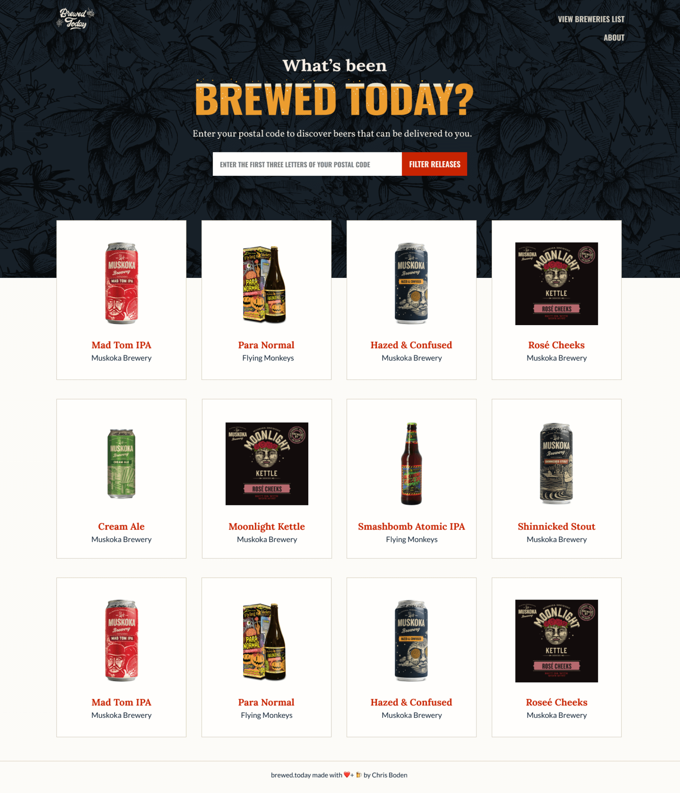
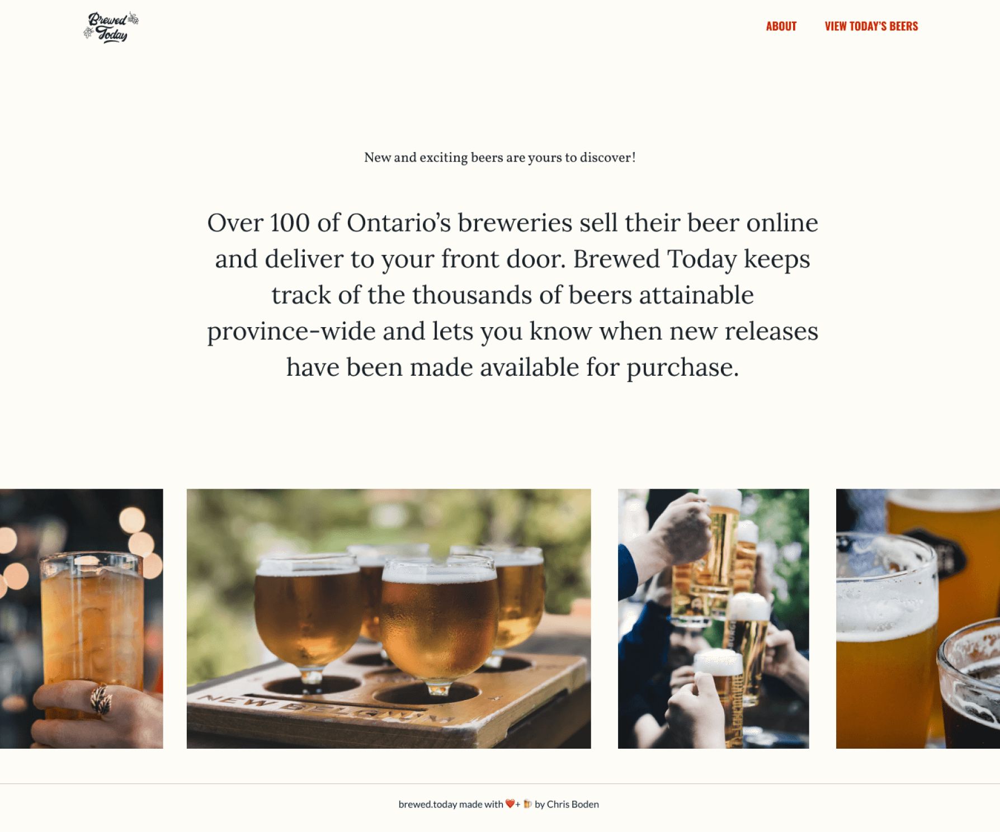

Simple, yet distinct branding for a company showcasing hand crafted, distinct beers.
See It LiveBrewed Today hosts an online app displaying newly released beers for Ontarians to discover. They reached out to Wallflower to help develop a brand and an interface.
Brewed Today is about getting beer into the hands of consumers. The team felt it was important to create a brand that was distinctive but familiar.
The team didn’t want to be just another beer advertisement - they wanted to feel crafted, custom and simple.
Wallflower explored a variety of patterns, illustrations, and photography styles to help bring Brewed Today’s brand and platform to life.
Used for main titles on blue backgrounds.
Used for clickable items (text links and buttons).
Backgrounds, non-clickable text.
Used for web page backgrounds.
Used for outlines, often to divide content.
The team landed on a colour pallet that was warm and friendly, but distinctive.
Wallflower used personality packed typography, bright colours, and hand-drawn elements to help Brewed Today come to life.
We then fused these elements in Brewed Today’s web app.
Brewed Today continues to add new features allowing their users to customize the selection of beers displayed.